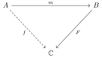

Conventions
In the following subsections, we work through all the conventions used in this package, starting from first principles to motivate the choices and ensure that each step is on firm footing. First, we can just list the most important conventions. Note that we will use Euler angles and spherical coordinates here. It is almost always a bad idea to use Euler angles in computing; quaternions are clearly the preferred representation for numerous reasons. However, Euler angles are important for (a) comparing to other sources, and (b) performing analytic integrations. These are the only two uses we will make of Euler angles.
Right-handed Cartesian coordinates $(x, y, z)$ and unit basis vectors $(𝐱, 𝐲, 𝐳)$.
Spherical coordinates $(r, \theta, \phi)$ and unit basis vectors $(𝐫, \boldsymbol{\theta}, \boldsymbol{\phi})$. The "polar angle" $\theta \in [0, \pi]$ measures the angle between the specified direction and the positive $𝐳$ axis. The "azimuthal angle" $\phi \in [0, 2\pi)$ measures the angle between the projection of the specified direction onto the $𝐱$-$𝐲$ plane and the positive $𝐱$ axis, with the positive $𝐲$ axis corresponding to the positive angle $\phi = \pi/2$.
Quaternions $𝐐 = W + X𝐢 + Y𝐣 + Z𝐤$, where $𝐢𝐣𝐤 = -1$. In software, this quaternion is represented by $(W, X, Y, Z)$. We will depict a three-dimensional vector $𝐯 = v_x 𝐱 + v_y 𝐲 + v_z 𝐳$ interchangeably as a quaternion $v_x 𝐢 + v_y 𝐣 + v_z 𝐤$.
A rotation represented by the unit quaternion $𝐑$ acts on a vector $𝐯$ as $𝐑\, 𝐯\, 𝐑^{-1}$.
Where relevant, rotations will be assumed to be right-handed, so that a quaternion characterizing the rotation through an angle $\vartheta$ about a unit vector $𝐮$ can be expressed as $𝐑 = \exp(\vartheta 𝐮/2)$. Note that $-𝐑$ would deliver the same rotation, which is why the group of unit quaternions $\mathrm{Spin}(3) = \mathrm{SU}(2)$ is a double cover of the group of rotations $\mathrm{SO}(3)$.
Euler angles parametrize a unit quaternion as $𝐑 = \exp(\alpha 𝐤/2)\, \exp(\beta 𝐣/2)\, \exp(\gamma 𝐤/2)$. The angles $\alpha$ and $\beta$ take values in $[0, 2\pi)$. The angle $\beta$ takes values in $[0, 2\pi]$ to parametrize the group of unit quaternions $\mathrm{Spin}(3) = \mathrm{SU}(2)$, or in $[0, \pi]$ to parametrize the group of rotations $\mathrm{SO}(3)$.
A point on the unit sphere with spherical coordinates $(\theta, \phi)$ can be represented by Euler angles $(\alpha, \beta, \gamma) = (\phi, \theta, 0)$. The rotation with these Euler angles takes the positive $𝐳$ axis to the specified direction. In particular, any function of spherical coordinates can be promoted to a function on Euler angles using this identification.
For a complex-valued function $f(𝐑)$, we define two operators, the left and right Lie derivatives:
\[L_𝐮 f(𝐑) = \left.-i \frac{d}{d\epsilon}\right|_{\epsilon=0} f\left(e^{\epsilon 𝐮/2}\, 𝐑\right) \qquad \text{and} \qquad R_𝐮 f(𝐑) = \left.-i \frac{d}{d\epsilon}\right|_{\epsilon=0} f\left(𝐑\, e^{\epsilon 𝐮/2}\right),\]
where $𝐮$ can be any pure-vector quaternion. In particular, $L$ represents the standard angular-momentum operators, and we can compute the expressions in Euler angles for the basis vectors:
\[\begin{aligned} L_x = L_𝐢 &= -i \left\{ -\frac{\cos\alpha}{\tan\beta} \frac{\partial} {\partial \alpha} - \sin\alpha \frac{\partial} {\partial \beta} +\frac{\cos\alpha}{\sin\beta} \frac{\partial} {\partial \gamma} \right\} \\ L_y = L_𝐣 &= -i \left\{ -\frac{\sin\alpha}{\tan\beta} \frac{\partial} {\partial \alpha} + \cos\alpha \frac{\partial} {\partial \beta} +\frac{\sin\alpha}{\sin\beta} \frac{\partial} {\partial \gamma} \right\} \\ L_z = L_𝐤 &= -i \frac{\partial} {\partial \alpha} \\ K_x = K_𝐢 &= -i \left\{ -\frac{\cos\gamma}{\sin\beta} \frac{\partial} {\partial \alpha} +\sin\gamma \frac{\partial} {\partial \beta} +\frac{\cos\gamma}{\tan\beta} \frac{\partial} {\partial \gamma} \right\} \\ K_y = K_𝐣 &= -i \left\{ \frac{\sin\gamma}{\sin\beta} \frac{\partial} {\partial \alpha} +\cos\gamma \frac{\partial} {\partial \beta} -\frac{\sin\gamma}{\tan\beta} \frac{\partial} {\partial \gamma} \right\} \\ K_z = K_𝐤 &= -i \frac{\partial} {\partial \gamma} \end{aligned}\]
We can lift any function on $S^2$ to a function on $S^3$ — or more precisely any function on spherical coordinates to a function on the space of Euler angles — by the correspondence $(\theta, \phi) \mapsto (\alpha, \beta, \gamma) = (\phi, \theta, 0)$. We can then express the angular-momentum operators in their more common form, in terms of spherical coordinates:
\[\begin{aligned} L_x &= -i \left\{ -\frac{\cos\phi}{\tan\theta} \frac{\partial} {\partial \phi} - \sin\phi \frac{\partial} {\partial \theta} \right\} \\ L_y &= -i \left\{ -\frac{\sin\phi}{\tan\theta} \frac{\partial} {\partial \phi} + \cos\phi \frac{\partial} {\partial \theta} \right\} \\ L_z &= -i \frac{\partial} {\partial \phi} \end{aligned}\]
(The $R$ operators make less sense for a function of spherical coordinates.)
Spherical harmonics
Wigner D-matrices
Spin-weighted spherical harmonics
Three-dimensional space
The space we are working in is naturally three-dimensional Euclidean space, so we start with a right-handed Cartesian coordinate system $(x, y, z)$. These also give us the unit basis vectors $(𝐱, 𝐲, 𝐳)$. Note that these basis vectors are assumed to have unit norm, but we omit the hats just to keep the notation simple. Any vector in this space can be written as
\[\mathbf{v} = v_x \mathbf{𝐱} + v_y \mathbf{𝐲} + v_z \mathbf{𝐳},\]
in which case the Euclidean norm is given by
\[\| \mathbf{v} \| = \sqrt{v_x^2 + v_y^2 + v_z^2}.\]
Equivalently, we can write the components of the Euclidean metric as
\[g_{ij} = \left( \begin{array}{ccc} 1 & 0 & 0 \\ 0 & 1 & 0 \\ 0 & 0 & 1 \end{array} \right)_{ij}.\]
Note that, because the points of the space are in one-to-one correspondence with the vectors, we will frequently use a vector to label a point in space.
We will be working on the sphere, so it will be very convenient to use spherical coordinates $(r, \theta, \phi)$. We choose the standard "physics" conventions for these, in which we relate to the Cartesian coordinates by
\[\begin{aligned} r &= \sqrt{x^2 + y^2 + z^2} &&\in [0, \infty), \\ \theta &= \arccos\left(\frac{z}{r}\right) &&\in [0, \pi], \\ \phi &= \arctan\left(\frac{y}{x}\right) &&\in [0, 2\pi), \end{aligned}\]
where we assume the $\arctan$ in the expression for $\phi$ is really the two-argument form that gives the correct quadrant. The inverse transformation is given by
\[\begin{aligned} x &= r \sin\theta \cos\phi, \\ y &= r \sin\theta \sin\phi, \\ z &= r \cos\theta. \end{aligned}\]
We can use this to find the components of the metric in spherical coordinates:
\[g_{i'j'} = \sum_{i,j} \frac{\partial x^i}{\partial x^{i'}} \frac{\partial x^j}{\partial x^{j'}} g_{ij} = \left( \begin{array}{ccc} 1 & 0 & 0 \\ 0 & r^2 & 0 \\ 0 & 0 & r^2 \sin^2\theta \end{array} \right)_{i'j'}.\]
The unit coordinate vectors in spherical coordinates are then
\[\begin{aligned} \mathbf{𝐫} &= \sin\theta \cos\phi \mathbf{𝐱} + \sin\theta \sin\phi \mathbf{𝐲} + \cos\theta \mathbf{𝐳}, \\ \boldsymbol{\theta} &= \cos\theta \cos\phi \mathbf{𝐱} + \cos\theta \sin\phi \mathbf{𝐲} - \sin\theta \mathbf{𝐳}, \\ \boldsymbol{\phi} &= -\sin\phi \mathbf{𝐱} + \cos\phi \mathbf{𝐲}, \end{aligned}\]
where, again, we omit the hats on the unit vectors to keep the notation simple.
One seemingly obvious — but extremely important — fact is that the unit basis frame $(𝐱, 𝐲, 𝐳)$ can be rotated onto $(\boldsymbol{\theta}, \boldsymbol{\phi}, \mathbf{r})$ by first rotating through the "polar" angle $\theta$ about the $\mathbf{y}$ axis, and then through the "azimuthal" angle $\phi$ about the $\mathbf{z}$ axis. This becomes important when we consider spin-weighted functions.
Integration in Cartesian coordinates is, of course, trivial as
\[\int_{\mathbb{R}^3} f\, d^3\mathbf{r} = \int_{-\infty}^{\infty} \int_{-\infty}^{\infty} \int_{-\infty}^{\infty} f\, dx\, dy\, dz.\]
In spherical coordinates, the integrand involves the square-root of the determinant of the metric, so we have
\[\int_{\mathbb{R}^3} f\, d^3\mathbf{r} = \int_0^\infty \int_0^\pi \int_0^{2\pi} f\, r^2 \sin\theta\, dr\, d\theta\, d\phi.\]
Restricting to the unit sphere, and normalizing so that the integral of 1 over the sphere is 1, we can simplify this to
\[\int_{S^2} f\, d^2\Omega = \frac{1}{4\pi} \int_0^\pi \int_0^{2\pi} f\, \sin\theta\, d\theta\, d\phi.\]
Four-dimensional space: Quaternions and rotations
Geometric algebra
Given the basis vectors $(𝐱, 𝐲, 𝐳)$ and the Euclidean norm, we can define the geometric algebra. The key feature is the geometric product, which is defined for any pair of vectors as $𝐯$ and $𝐰$ as
\[𝐯 𝐰 = 𝐯 ⋅ 𝐰 + 𝐯 ∧ 𝐰,\]
where the dot product is the usual scalar product and the wedge product is the antisymmetric part of the tensor product — acting just like the standard exterior product from the algebra of differential forms. The geometric product is linear, associative, distributive, and has the property that
\[𝐯𝐯 = \| 𝐯 \|^2.\]
The most useful properties of the geometric product are that parallel vectors commute with each other, while orthogonal vectors anticommute. Since the geometric product is linear, the product of any two vectors can be decomposed into parallel and orthogonal parts.
The basis for this entire space is then the set
\[\begin{gather} 𝟏, \\ 𝐱, 𝐲, 𝐳,\\ 𝐱𝐲, 𝐱𝐳, 𝐲𝐳, \\ 𝐱𝐲𝐳. \end{gather}\]
The standard presentation of quaternions (including the confused historical development) uses different symbols for these last four basis elements:
\[\begin{gather} 𝐢 = 𝐳𝐲 = -𝐲𝐳, \\ 𝐣 = 𝐱𝐳 = -𝐳𝐱, \\ 𝐤 = 𝐲𝐱 = -𝐱𝐲, \\ 𝐈 = 𝐱𝐲𝐳. \end{gather}\]
Note that each of these squares to -1. For example, recalling that orthogonal vectors anticommute, the product is associative, and the product of a vector with itself is just its squared norm, we have
\[𝐱𝐲𝐱𝐲 = -𝐱𝐲𝐲𝐱 = -𝐱(𝐲𝐲)𝐱 = -𝐱𝐱 = -1.\]
Any of these could act like the unit imaginary; $𝐱𝐲$ is probably the canonical choice.
$𝐈$ is sometimes called the pseudoscalar. Its inverse is $𝐈^{-1} = 𝐳𝐲𝐱 = -𝐱𝐲𝐳$, which can also serve as something very much like the Hodge star operator,[1] mapping elements to their "dual" elements. In particular, we have
\[\begin{aligned} 𝐢 &= 𝐈^{-1}𝐱, \\ 𝐣 &= 𝐈^{-1}𝐲, \\ 𝐤 &= 𝐈^{-1}𝐳. \end{aligned}\]
We will see that $𝐢$ generates right-handed rotations in the positive sense about $𝐱$, $𝐣$ about $𝐲$, and $𝐤$ about $𝐳$. Moreover, this mapping between $(𝐱, 𝐲, 𝐳)$ and $(𝐢, 𝐣, 𝐤)$ is a vector-space isomorphism. In fact, the reader who is not familiar with geometric algebra but is familiar with quaternions may be able to read an expression like $𝐣 𝐱 𝐣⁻¹$ as if it is just an abuse of notation, and mentally replace $𝐱$ with $𝐢$ to read those symbols as a valid quaternion expression; both viewpoints are equally correct by the isomorphism.
Quaternions and Euler angles
Note that there are different conventions for the signs of the $(𝐢, 𝐣, 𝐤)$ basis. Everyone agrees that $𝐢² = 𝐣² = 𝐤² = -1$, but we could easily flip the sign of any basis element, and these would still be satisfied. The identifications we chose above are made to ensure that $𝐢$ generates rotations about $𝐱$, and so on, but even that depends on how we define quaternions as acting on vectors (to be discussed below). A different choice of the latter would result in all flipping the sign of all three basis elements, which is a convention that is commonly used — though almost exclusively in aerospace. The key expressions that eliminate ambiguity are the multiplications
\[\begin{aligned} 𝐢 𝐣 &= 𝐤, \\ 𝐣 𝐤 &= 𝐢, \\ 𝐤 𝐢 &= 𝐣. \end{aligned}\]
We can also use these rules above to determine $𝐢𝐣𝐤 = -𝟏$. All four of these equations have flipped signs in other conventions. See Sommer et al. for a discussion of the different conventions.
We use coordinates $(W, X, Y, Z)$ on the space of quaternions, so that a quaternion would be written as
\[𝐐 = W𝟏 + X𝐢 + Y𝐣 + Z𝐤,\]
though we usually omit the $𝟏$. The space of all quaternions is thus four dimensional. The norm is just the standard Euclidean norm, so that the norm of a quaternion is
\[\| 𝐐 \| = \sqrt{W^2 + X^2 + Y^2 + Z^2}.\]
An important operation is the conjugate, which is defined as
\[\overline{𝐐} = W - X𝐢 - Y𝐣 - Z𝐤.\]
Note that the squared norm can be written as the quaternion times its conjugate. Any nonzero quaternion has an inverse, which is just the conjugate divided by the squared norm:
\[𝐐^{-1} = \frac{\overline{𝐐}}{𝐐\overline{𝐐}} = \frac{\overline{𝐐}}{\| 𝐐 \|^2}.\]
The other important operation is exponentiation. Since a scalar commutes with any quaternion, including a nonzero scalar component in the quaternion will simply multiply the result by the exponential of that scalar component. Moreover, we will not have any use for such an exponential, so we assume that the argument to the exponential function is a "pure" quaternion — that is, one with zero scalar component. Moreover, we write it as a unit quaternion $𝐮$ times some real number $\sigma$. In particular, note that $𝐮^2 = -1$, so that it acts like the imaginary unit, which means we already know how to exponentiate it:
\[\exp(𝐮\, \sigma) = \cos\sigma + 𝐮\, \sin\sigma.\]
Note that the inverse of the result can be obtained simply by negating the argument, as usual.
Much as with standard three-dimensional space, we could introduce a generalization of spherical coordinates, though we use a slight variant: extended Euler coordinates. We will see below how to interpret these as a series of rotations. For now, we simply state the relation:
\[\begin{aligned} R &= \sqrt{W^2 + X^2 + Y^2 + Z^2} &&\in [0, \infty), \\ \alpha &= \arctan\frac{Z}{W} + \arctan\frac{-X}{Y} &&\in [0, 2\pi), \\ \beta &= 2\arccos\sqrt{\frac{W^2+Z^2}{W^2+X^2+Y^2+Z^2}} &&\in [0, 2\pi], \\ \gamma &= \arctan\frac{Z}{W} - \arctan\frac{-X}{Y} &&\in [0, 2\pi), \end{aligned}\]
where we again assume the $\arctan$ in the expressions for $\alpha$ and $\gamma$ is really the two-argument form that gives the correct quadrant. Note that here, $\beta$ ranges up to $2\pi$ rather than just $\pi$, as in the standard Euler angles. This is because we are describing the space of quaternions, rather than just the space of rotations. If we restrict to $R=1$, we have exactly the group of unit quaternions $\mathrm{Spin}(3)=\mathrm{SU}(2)$, which is a double cover of the rotation group $\mathrm{SO}(3)$. This extended range for $\beta$ is necessary to cover the entire space of quaternions; if we further restrict to $[0, \pi)$, we would only cover the space of rotations. This and the inclusion of $R$ identify precisely how this coordinate system extends the standard Euler angles.
The inverse transformation is given by
\[\begin{aligned} W &= R\, \cos\frac{β}{2} \cos\frac{α+γ}{2}, \\ X &= -R\, \sin\frac{β}{2} \sin\frac{α-γ}{2}, \\ Y &= R\, \sin\frac{β}{2} \cos\frac{α-γ}{2}, \\ Z &= R\, \cos\frac{β}{2} \sin\frac{α+γ}{2}. \end{aligned}\]
As with the spherical coordinates, we can use this to find the components of the metric in our extended Euler coordinates:
\[g_{i'j'} = \sum_{i,j} \frac{\partial X^i}{\partial X^{i'}} \frac{\partial X^j}{\partial X^{j'}} g_{ij} = \left( \begin{array}{cccc} 1 & 0 & 0 & 0 \\ 0 & \frac{R^2}{4} & 0 & \frac{R^2 \cos\beta}{4} \\ 0 & 0 & \frac{R^2}{4} & 0 \\ 0 & \frac{R^2 \cos\beta}{4} & 0 & \frac{R^2}{4} \end{array} \right)_{i'j'}.\]
Again, integration involves a square-root of the determinant of the metric, which reduces to $R^3 |\sin\beta| / 8$. Note that — unlike with standard spherical coordinates — the absolute value is necessary because $\beta$ ranges over the entire interval $[0, 2\pi]$. The integral over the entire space of quaternions is then
\[\int_{\mathbb{R}^4} f\, d^4𝐐 = \int_{-\infty}^\infty \int_{-\infty}^\infty \int_{-\infty}^\infty \int_{-\infty}^\infty f\, dW\, dX\, dY\, dZ = \int_0^\infty \int_0^{2\pi} \int_0^{2\pi} \int_0^{2\pi} f\, \frac{R^3}{8} |\sin β|\, dR\, dα\, dβ\, dγ.\]
Restricting to the unit sphere, and normalizing so that the integral of 1 over the sphere is 1, we can simplify this to
\[\int_{\mathrm{Spin}(3)} f\, d^3\Omega = \frac{1}{16\pi^2} \int_0^{2\pi} \int_0^{2\pi} \int_0^{2\pi} f\, |\sin β|\, dα\, dβ\, dγ.\]
Finally, restricting to the space of rotations, we can further simplify this to
\[\int_{\mathrm{SO}(3)} f\, d^3\Omega = \frac{1}{8\pi^2} \int_0^{2\pi} \int_0^{\pi} \int_0^{2\pi} f\, \sin β\, dα\, dβ\, dγ.\]
Rotations
We restrict to a unit quaternion $𝐑$, for which $W^2 + X^2 + Y^2 + Z^2 = 1$. Given this constraint we can, without loss of generality, write the quaternion as
\[𝐑 = \exp\left(\frac{\rho}{2} \hat{\mathfrak{r}}\right) = \cos\frac{\rho}{2} + \sin\frac{\rho}{2}\, \hat{\mathfrak{r}},\]
where $\rho$ is an angle of rotation and $\hat{\mathfrak{r}}$ is a unit "pure-vector" quaternion. We can multiply a vector $𝐯$ as
\[𝐑\, 𝐯\, 𝐑^{-1}.\]
Splitting $𝐯 = 𝐯_⟂ + 𝐯_∥$ into components perpendicular and parallel to $\hat{\mathfrak{r}}$, we see that $𝐯_∥$ commutes with $𝐑$ and $𝐑^{-1}$, while $𝐯_⟂$ anticommutes with $\hat{\mathfrak{r}}$. To find the full rotation, we expand the product:
\[\begin{aligned} 𝐑\, 𝐯\, 𝐑^{-1} &= 𝐯_∥ + \left(\cos\frac{\rho}{2} + \sin\frac{\rho}{2}\, \hat{\mathfrak{r}}\right) 𝐯_⟂ \left(\cos\frac{\rho}{2} - \sin\frac{\rho}{2}\, \hat{\mathfrak{r}}\right) \\ &= 𝐯_∥ + \left(\cos\frac{\rho}{2}\, 𝐯_⟂ + \sin\frac{\rho}{2}\, \hat{\mathfrak{r}}\, 𝐯_⟂\right) \left(\cos\frac{\rho}{2} - \sin\frac{\rho}{2}\, \hat{\mathfrak{r}}\right) \\ &= 𝐯_∥ + \cos^2\frac{\rho}{2}\, 𝐯_⟂ + \sin\frac{\rho}{2}\, \cos\frac{\rho}{2}\, \hat{\mathfrak{r}}\, 𝐯_⟂ - \sin\frac{\rho}{2}\, \cos\frac{\rho}{2}\, 𝐯_⟂ \, \hat{\mathfrak{r}} - \sin^2\frac{\rho}{2}\, \hat{\mathfrak{r}}\, 𝐯_⟂\, \hat{\mathfrak{r}} \\ &= 𝐯_∥ + \cos^2\frac{\rho}{2}\, 𝐯_⟂ + \sin\frac{\rho}{2}\, \cos\frac{\rho}{2}\, [\hat{\mathfrak{r}}, 𝐯_⟂] - \sin^2\frac{\rho}{2}\, 𝐯_⟂ \\ &= 𝐯_∥ + \cos\rho\, 𝐯_⟂ + \sin\rho\, \hat{\mathfrak{r}}\times 𝐯_⟂ \end{aligned}\]
The final expression shows that this is precisely what we expect when rotating $𝐯$ through an angle $\rho$ (in a positive, right-handed sense) about the axis $\hat{\mathfrak{r}}$.
Note that the presence of two factors of $𝐑$ in the expression for rotating a vector explains two things. First, it explains why the angle of rotation is twice the angle of the quaternion: one factor of $𝐑$ either commutes and cancels or anti-commutes and combines with the the other factor. Second, it explains why the quaternion group is a double cover of the rotation group: negating $𝐑$ results in the same rotation. Thus, for any rotation, there are two (precisely opposite) quaternions that represent it.
Euler angles and spherical coordinates
Now that we understand how rotations work, we can provide geometric intuition for the expressions given above for Euler angles. The Euler angles in our convention represent an initial rotation through $\gamma$ about the $𝐳$ axis, followed by a rotation through $\beta$ about the $𝐲$ axis, and finally a rotation through $\alpha$ about the $𝐳$ axis. Note that the axes are fixed, and not subject to any preceding rotations. More precisely, we can write the unit quaternion as
\[𝐑 = \exp\left(\frac{\alpha}{2} 𝐤\right) \exp\left(\frac{\beta}{2} 𝐣\right) \exp\left(\frac{\gamma}{2} 𝐤\right).\]
One of the more important interpretations of a rotor is considering what it does to the basis triad $(𝐱, 𝐲, 𝐳)$. In particular, the vector $𝐳$ is rotated onto the point given by spherical coordinates $(\theta, \phi) = (\beta, \alpha)$, while $𝐱$ and $𝐲$ are rotated into the plane spanned by the unit basis vectors $\boldsymbol{\theta}$ and $\boldsymbol{\phi}$ corresponding to that point. If $\gamma = 0$ the rotation is precise, meaning that $𝐱$ is rotated onto $\boldsymbol{\theta}$ and $𝐲$ onto $\boldsymbol{\phi}$; if $\gamma ≠ 0$ then they are rotated within that plane by the angle $\gamma$ about the $\mathbf{r}$ axis. Thus, we identify the spherical coordinates $(\theta, \phi)$ with the Euler angles $(\alpha, \beta, \gamma) = (\phi, \theta, 0)$.
Rotation and angular-momentum operators
Complex-valued functions
Starting with Cartesian coordinates and the Euclidean norm on $\mathbb{R}^3$, we have constructed the geometric algebra over that space, as well as the spaces $\mathrm{Spin}(3) = \mathrm{SU}(2)$ (topologically $S^3$), $\mathrm{SO}(3)$ (topologically $\mathbb{RP}^3$), and $S^2$. We will be defining complex-valued functions on these spaces, and defining operators to construct and classify them. In particular, because we have constructed the spaces, they are naturally supplied with coordinates that are effectively inherited from the original Cartesian system. We will be using these coordinate systems to construct both the operators and functions. However, it is important to note that the coordinate systems may have singularities, which means that the spaces of coordinates may have different topologies than the spaces they represent. For example, Euler angles have topology $S^1 \times I \times S^1$ instead of the $S^3$ and $\mathbb{RP}^3$ topologies of the spaces they represent; spherical coordinates have topology $S^1 \times I$ instead of $S^2$.
Defining functions on the coordinate system of a space is subtly different from defining functions on the space itself. For example, spin-weighted functions are generally written as functions of ($S^2$) spherical coordinates. However, they cannot be defined as functions on $S^2$ itself; some notion of a reference tangent direction is needed at each point. The difference is that spherical coordinates supply a natural choice for the reference tangent direction: the unit vector in the $\boldsymbol{\theta}$ direction. This supplies just enough information to define the spin-weighted functions — though this ends up not being a useful form when more general transformations or deeper understanding are needed.
An important concept is that of a "lift". Given $f$ and $g$ in the diagram below, a lift of $f$ is a function $h$ such that $f = g \circ h$.
 Here, there are several relevant cases. Functions on $S^2$ can be lifted to $S^3$; functions on either of those spaces can be lifted to their coordinate spaces; etc.
Because of lifts or pushbacks, we have some freedom to define functions on the "largest" space available.
- Start with finite rotations — both left and right translations
- note the signs; these give us the signs
- Then, we differentiate those finite rotations, generating rotation of a function by exponentiating a generator giving finite rotation; this lets us set some signs
- Express angular momentum operators in terms of quaternion components
- Basic Lie definition
- Properties: form a Lie algebra with the commutator as the Lie bracket
- Express angular momentum operators in terms of Euler angles
- We just rewrite the $R$ in the Lie definitions in terms of Euler angles, multiply by $\exp(\theta/2)$, rederive the new Euler angles from that result, and use the chain rule
- Show for both the three- and two-spheres
- Show how they act on functions on the three-sphere
Angular-momentum operators in Euler angles
The idea here is to express, e.g., $e^{\theta \mathbf{e}_i / 2}\mathbf{R}_{\alpha, \beta, \gamma}$ in quaternion components, then solve for the new Euler angles $\mathbf{R}_{\alpha', \beta', \gamma'}$ in terms of the quaternion components, where these new angles all depend on $\theta$. We then use the chain rule to express $\partial_\theta$ in terms of $\partial_{\alpha'}$, etc., which become $\partial_\alpha$, etc., when $\theta=0$.
\[ \begin{align} L_i f(\mathbf{R}) &= \left. -\mathbf{z} \frac{\partial} {\partial \theta} f \left( e^{\theta \mathbf{e}_i / 2} \mathbf{R}_{\alpha, \beta, \gamma} \right) \right|_{\theta=0} \\ &= \left. -\mathbf{z} \frac{\partial} {\partial \theta} f \left( \mathbf{R}_{\alpha', \beta', \gamma'} \right) \right|_{\theta=0} \\ &= \left. -\mathbf{z} \left[ \frac{\partial \alpha'} {\partial \theta}\frac{\partial} {\partial \alpha'} + \frac{\partial \beta'} {\partial \theta}\frac{\partial} {\partial \beta'} + \frac{\partial \gamma'} {\partial \theta}\frac{\partial} {\partial \gamma'} \right] f \left( \mathbf{R}_{\alpha', \beta', \gamma'} \right) \right|_{\theta=0} \\ &= -\mathbf{z} \left[ \frac{\partial \alpha'} {\partial \theta}\frac{\partial} {\partial \alpha} + \frac{\partial \beta'} {\partial \theta}\frac{\partial} {\partial \beta} + \frac{\partial \gamma'} {\partial \theta}\frac{\partial} {\partial \gamma} \right]_{\theta=0} f \left( \mathbf{R}_{\alpha, \beta, \gamma} \right) \\ K_i f(\mathbf{R}) &= -\mathbf{z} \left[ \frac{\partial \alpha''} {\partial \theta}\frac{\partial} {\partial \alpha} + \frac{\partial \beta''} {\partial \theta}\frac{\partial} {\partial \beta} + \frac{\partial \gamma''} {\partial \theta}\frac{\partial} {\partial \gamma} \right]_{\theta=0} f \left( \mathbf{R}_{\alpha, \beta, \gamma} \right), \end{align}\]
- 1Note that quaternions will only be spanned by elements made from an even number of the basis vectors. It turns out that those with an odd number will produce reflections, rather than rotations, when acting on a vector — as discussed below. This explains why quaternions are restricted to just those elements with an even number to represent rotations. For details see any geometric algebra text, like Doran and Lasenby.